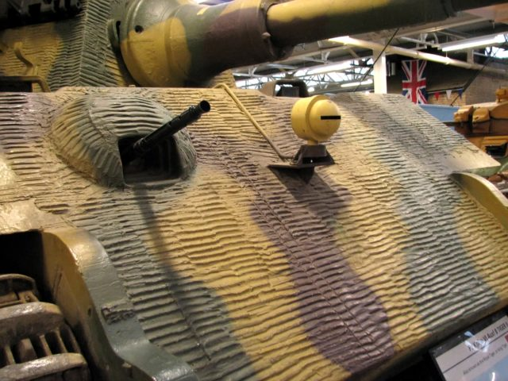
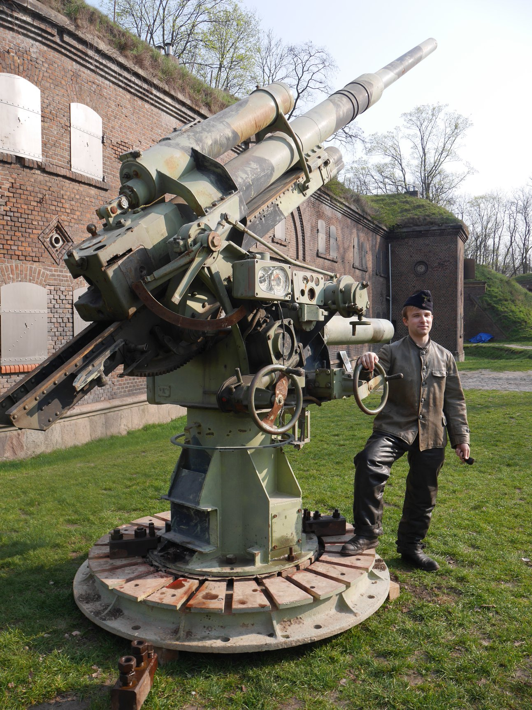
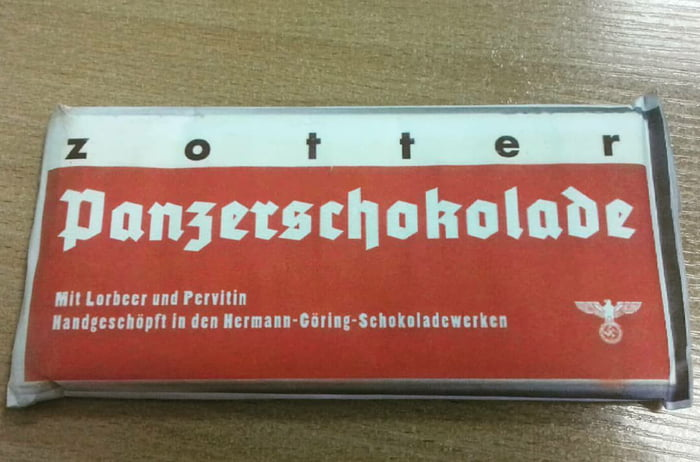

Zimmerit  Zimmerit to pasta magnetyczna zaprojektowana przez Niemcy i stosowana od grudnia 1943 do września 1944. Jej zadaniem było neutralizowanie magnesów w minach magnetycznych by zapobiec przyklejaniu się tych ładunków. Użycie tej pasty zostało zarzucone, gdyż były podejrzenia, że Zimmerit jest w stanie zapalić się od wybuchu ładunków pocisków. Teoria ta została obalona, jednakże rozkaz nie został cofnięty. Składniki Zimmeritu to: siarczan baru BaSO4 - około 40% polioctan winylu (PVA) - około 25% ochra (barwnik) - około 15% siarczek cynku ZnS - około 10% trociny - około 10% Pojazdy, które zgodnie z rozkazem Naczelnego Dowództwa Wehrmachtu, miały być zaopatrzone w Zimmerit: PzKpfw III PzKpfw IV PzKpfw V Panther PzKpfw VI Tiger oraz VI B Tiger II Ferdinand/Elefant Sturmgeschütz III Sturmgeschütz IV Jagdpanzer 38(t) Hetzer Panzerjäger Nashorn Na jeden czołg Panzerkampfwagen VI Tiger potrzeba było aż 200 kg Zimmeritu
8.8cm FlaK 41  8.8 cm Flak (skrót od Flugabwehrkanone - działo przeciwlotnicze) 41 to niemieckie działo przeciwlotnicze kalibru 88mm o długości 56 kalibrów, znane potocznie jako osiemdziesiątka ósemka. Nie było to jedyne działo tego kalibru używane przez armię niemiecką, pozostałe to Flak 18, 36, 37 oraz 37/41 Mimo bycia działem p.lot., pociski przeciwpancerne wystrzeliwane z tego działa są w stanie przebić aż 150mm pancerza z 1500m, co wystarczało na każdy czołg okresu WW2 W 1941 roku firma Krupp zaczęła budować opancerzony pojazd wyposażony w tą armatę. Powstał jeden pojazd, nigdy nie wszedł do służby Działa te były czasami przekształcane na kompatybilne z czołgami w działami samobieżnymi 8.8 cm PanzerjägerKanone (PaK) 43 and KampfwagenKanone (KwK) 43. Wyposażone w nie były: Panzerkampfwagen VI Tiger I (8.8cm KwK 36 - na bazie 8.8cm Flak 36) Panzerkampfwagen VI B Tiger II (8.8cm KwK 43) Jagdpanther (8.8cm PaK 43) Panzerjäger Nashorn (8.8cm PaK 43) Ferdinand/Elefant (8.8cm PaK 43) Panther II (8.8cm KwK 43) - nie produkowano tego czołgu, ta armata była tylko w planach
Pervitin  Pervitin to dystrybuowana w Trzeciej Rzeszy metaamfetamina, by zrobić z żołnierzy niezniszczalne maszyny do zabijania. Nazywany pieszczotliwie przez armię jako Panzerschokolade - Pancerna czekolada Zdjęcie umieszczone na naszej stronie to internetowa karykatura tej nazwy. Sama czekolada (według zdjęcia) miała być produkowana przez Hermanna Göringa w firmie Zotter. Firma, która światło dzienne ujrzała dopiero w 1999 roku, odwołała się do tego zdjęcia, uświadamiając jego fałszywość i oddala jakiekolwiek oskarżenia o połączenia z nazistowskim reżimem. Stanowisko firmy Zotter
Amerykańskie bomby atomowe Bomby Little Boy i Fat Man, zrzucone odpowiednio 6 sierpnia 1945 na Hiroshimę i 9 sierpnia 1945 na Nagasaki były pierwszymi i jedynymi takimi bombami użytymi w celach militarnych. Charakterystyki bomb Nazwa Data zrzutu Cel zrzutu Masa Rodzaj ładunku Masa ładunku Ilość zabitych Równoważnik trotylowy Little Boy 6 sierpnia 1945 Hiroshima, Japonia 4.400 kg Wzbogacony uran-235 64kg 66 tysięcy 15 kiloton TNT Fat Man 9 sierpnia 1945 Nagasaki, Japonia 4.670kg Pluton 6.4kg 60-80 tys. 21 kiloton TNT